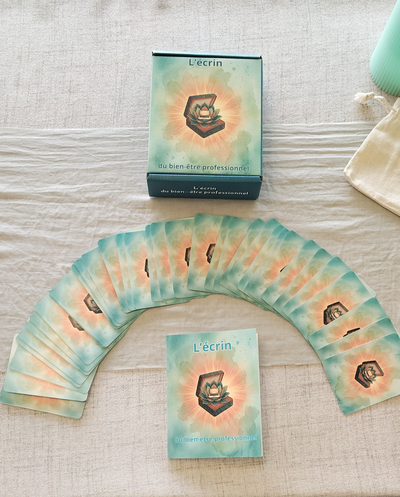

L’Oracle qui vous permet de devenir acteur de votre qualité de vie au travail.
Responsable prévention des risques professionnels de carrière ayant vécu un burn-out et énergéticienne de passion, j’ai côtoyé beaucoup de personnes en mal-être professionnel qui se sentaient démunies et ne trouvaient pas de réponses dans les politiques « Prévention des risques psychosociaux » de leurs employeurs.
Pourquoi ? Parce que le bien-être au travail, ce n’est pas qu’une politique globale d’entreprise, c’est aussi un parcours personnel visant à s’aligner avec son travail.
C’est pour cela que j’ai créé cet oracle spécifiquement dédié à nos vies professionnelles. Il est conçu comme un outil de développement à destination des personnes en perte de sens, en burn-out ou en transition professionnelle afin de les accompagner sur le chemin de l’épanouissement au travail.
Ce jeu est une boussole qui vous guide chaque jour sur le chemin du bien-être professionnel, mais n’oubliez pas que vous êtes votre propre lumière et le seul décideer.
Vous souhaitez qu'il vous accompagne au quotidien, contactez nous pour les tarifs.
Nous contacter